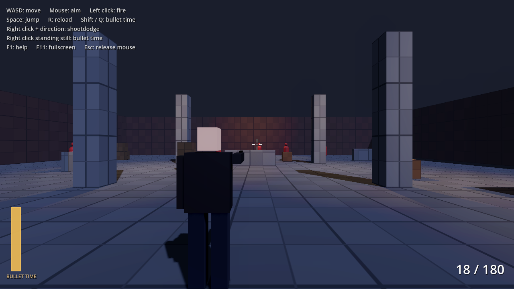
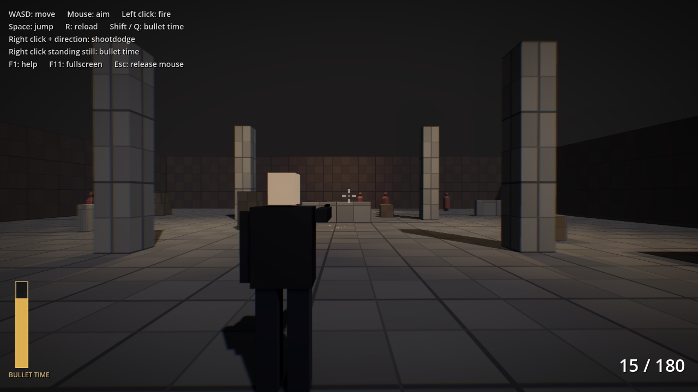
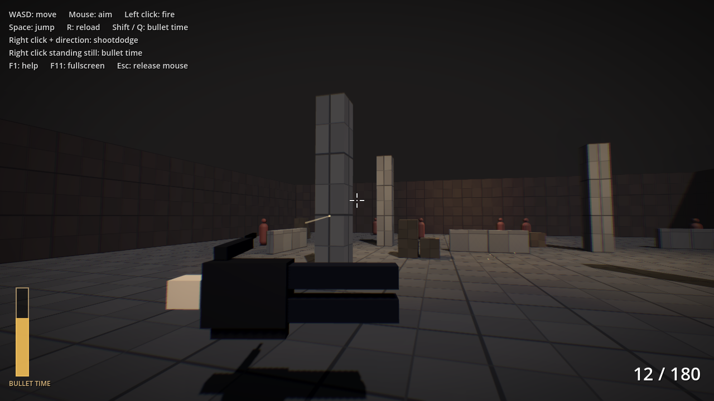
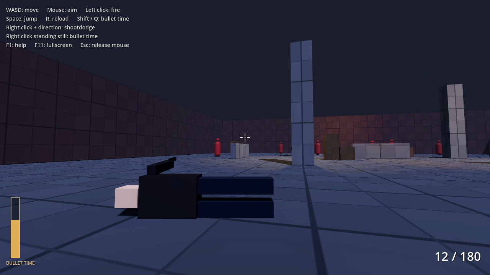

Max Pain - screenshots

Standing in the test arena.

Bullet time: the world slows down while aiming stays responsive.

Shootdodge: slow-motion dive while shooting.

Landed: still able to shoot while on the ground.